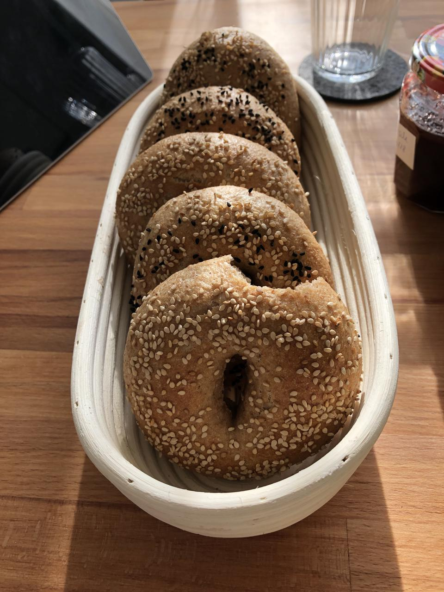

Bagel
Obwohl ich meine Sauerteigreste auf ein Minimum reduziert habe, fallen durch häufiges Brotbacken und damit Füttern doch eine kleine Menge Sauerteigabfall an, den ich zwar für mein Anstellgut nichtmehr benötige, ich es trotzdem nicht wegschmeißen möchte. Daher sammel ich alle Reste und backe damit dann diese Bagel. Zudem ist der Teig sehr einfach und geht einfach über Nacht im Kühlschrank und kann morgens ohne lange Wartezeit gebacken werden.
Durch das Kochen in gesüßtem Wasser vor dem Backen bekommen die Bagel eine knusprige Kruste. Alternativ kann man das Wasser auch mit Natron "würzen", dann bekommen die Bagel einen Geschmack, der etwas an Laugengebäck erinnert.
Gänzliches Weglassen des Kochen und stattdessen Tauchen der Teiglinge in echter Lauge geht mit diesem Rezept auch, das Ergebnis sind dann leckere Laugenkringel.

Sauerteig
- 50 g Anstellgut, aktiv oder alt aus dem Kühlschrank
- 100 g Vollkornmehl (Dinkel oder Weizen)
- 100 g Wasser
Hauptteig
- Sauerteig
- 425 g Mehl (1050, Vollkorn,..)
- 12 g Salz
- 125-200 g Wasser, kalt (je nach Vollkornanteil)
- 50 g Sojamilch
- 8 g Olivenöl
Kochwasser
- 2 l Wasser
- 1 EL Rohrzucker oder Ahornsirup (oder 2 TL Natron)
Für den Sauerteig alle Zutaten mischen. Je nach Aktivität, Temperatur und Alter des Anstellguts beim Raumtemperatur 5-12 Stunden gehen lassen. Hierbei einfach den Teig beobachten. Wenn er so aussieht, als hätte er sein maximales Volumen erreicht und fällt geradeso wieder zusammen, dann ist er bereit. Bei mir dauert das meistens etwa 5-6 Stunden.
Für den Hauptteig alle Zutaten von Hand oder mit einer Küchenmaschine 5 Minuten zu einem geschmeidigen Teig kneten. Der Teig sollte nichtmehr kleben und nicht zu weich sein. Ist das verwendete Mehl im Hauptteig helles Weizen- oder Dinkelmehl, verwende ich 125 g Wasser. Für alle 100 g Vollkornmehl, das durch das helle Mehl ersetzt wird, verwende ich 20 g mehr Wasser.
Bei Raumteperatur 2 Stunden gehen lassen, dabei alle 30 Minuten dehnen und falten. Dann abgedeckt 8-12 h im Kühlschrank gehen lassen. Wenn der Hauptteig abends um 20 Uhr hergestellt wird, kann der Teig einfach über Nacht im Kühlschrank gehen.
Den Teig aus dem Kühlschrank holen und in 8 gleichschwere Stücke à 115-120 g aufteilen. Erst rundwirken und dann zu Bageln formen, indem man mit bemehlten Fingern ein Loch in die Mitte drückt und dieses dann vorsichtig und gleichmäßig weitet. Bagel auf ein Backblech setzen und 20 Minuten ruhen lassen. Währenddessen den Backofen auf 240°C aufheizen.
Das Wasser in einem Topf zum Kochen bringen und den Zucker hinzufügen. Nach der Ruhezeit die Bagel zu zweit nacheinander eine Minute im Wasser kochen und dann wieder zurück auf das Backblech setzen und sofort mit nach belieben mit Sesam, Schwarzkümmel oder Mohn bestreuen. Nachdem alle Bagel gekocht und bestreut sind, direkt in den heißen Backofen schieben und bei 220°C 25 Minuten backen.